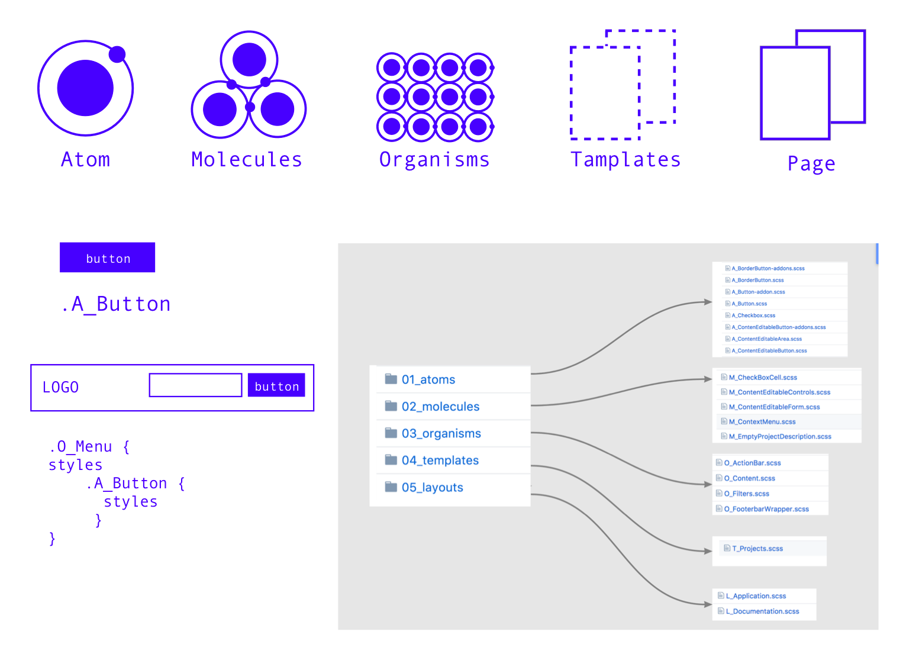
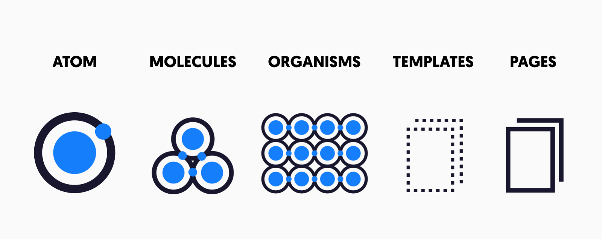
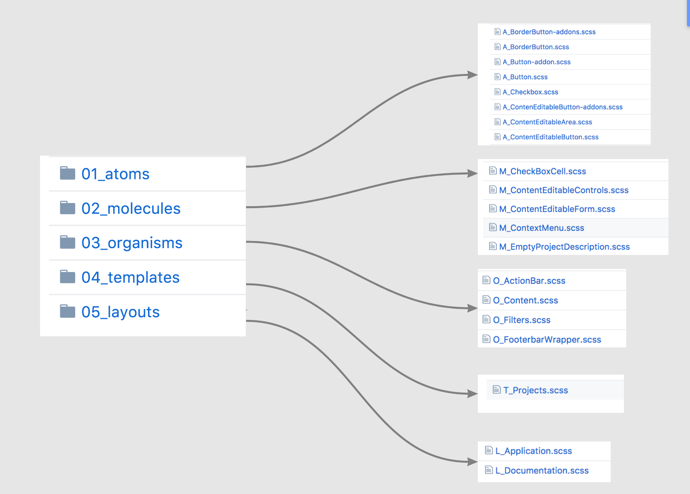

Паттерн проектирования на основе методологии atomic design
Cистема проектирования,которая поможет сделать код более систематичным и красивым, а также помогает дизайнерам и программистам думать одинаково.
Проблема
Программисты не воспринимают всерьез принципы организации CSS кода, придумывая собственную семантику, хотя это могло бы упростить и ускорить написание кода CSS и HTML также заслуживают своей архитектуры, как все языки программирования. Они не только заслуживают, но должны разрабатываться по какой то методологии чтобы не было плохого кода. Также, Существует давняя проблема - дизайнеры и программисты не понимают друг друга, так как используется разная логика в этих двух сферах.
Также, Существует давняя проблема - дизайнеры и программисты не понимают друг друга, так как используется разная логика в этих двух сферах.
- БЭМ
- OOCSS
- SMACSS
- Atomic CSS
- MCSS
- AMCSS
- AFUN
БЭМ ( Блок, элемент, модификатор) является самой популярной методологией в мире. Также его предпочитают использовать при дизайн-системах атомарного дизайна(об этом ниже), видя схожесть в этих подходах. Однако, код с БЭМ становится довольно громоздким, html получается достаточно засорен названиями “многоэтажных” классов.
Целевая аудитория
- Фронтэнд разработчики
- Верстальщики
- Программисты-новички
- Дизайнеры, осваивающие верстку
Решение
В наше время в дизайне становится все больше популярным создание дизайн систем при помощи методологии атомарного дизайна.
Atomic design созданный Брэдом Фростом - это методология создания систем дизайна, главной идей которой является модулярность.Сейчас перед нами стоит задача убедиться, что наш веб-интерфейс прекрасно выглядит и работает на широчайшем спектре смартфонов, планшетов, нетбуков, ноутбуков, компьютеров, телевизоров, игровых консолей и т.д. Чтобы совладать с этой реальностью и сохранить рассудок, абсолютно необходимо сделать шаг назад и разделить гигантские задачи на более мелкие и управляемые части.В атомном дизайне есть пять отчётливых уровней:
Основная суть данной системы , что из мелких уже в каком-то роде самостоятельных элементов строятся более крупные, так же самостоятельные элементы. Разные комбинации атомов рождают разные молекулы. И подобную систему можно было бы привнести и в организацию кода.
Файловая система
Обычно файловая система делится по тому же принципу , что и дизайн система, стили делятся на папки по сущностям, в каждой папке хранятся элементы соответствующие :
Префикс-обозначения
сли создавать заголовок для веб-сайта, стиль будет расположен в «scss / organisms » , поэтому имя класса и будет O_Header
Первая буква будет обозначать, к чему относится класс, также такое название файла наиболее понятно и систематично.Этот подход помогает узнать, является ли какой-либо элемент атомом, молекулой, организмом и т. д.
- A_name = atom / name
- M_name = molecules /name
- O_name = organisms /name
- T_name = templates /name
- P_name = pages / name
Т. к. мы делим все элементы на сущности , не приходится прописывать громоздкие классы, чтобы показать, насколько глубоко находится элемент, как в БЭМ.
Некоторые сущности могут содержать другие. Организмы могут быть родителями молекул и атомов, молекулы могут быть родителями атомов, но атомы не могут быть родителями какого-либо компонента.В scss это очень удобно реализовывать :
Как бы это помогло?
Во-первых, одинаковый подход дизайнеров и программистов помог бы лучше им понять друг друга, ускорить и упростить работу над проектом;
Во-вторых, более чистая, сегментированная, удобная организация кода;
В-третьих, большее понимание программистов системы атомарного дизайна
Как проверить, насколько хорошо будет это работать?
Для проверки данного паттерна проектирования необходимо создать 3 разных фреймворка с ui китами, написанными при помощи разных технологий( css, react/rejax, ruby on rails)
Задачи
1. Понять принцип организации кода, основанный на принципе атомарного дизайна и написать к нему документацию
- написать в документации правила наименования имен
- семантика кода
- описать файловую структуру
2.Написать 3 фреймоврка при помощи 3 разных технологий с использованием данной системы
- определить состав элементов фреймворков
- изучить react, scss, js
- понять , как данный способ организации кода будет работать в каждом из фреймворков
Риски
Прежде всего, с точки зрения компании, которая могла бы перейти на данную систему, это сложность понимания работниками новой системы, а так же перевод продукта на новую систему. Если продукт новый, то здесь зависит быстрота понятности и усваемости материала о принципах паттерна проектирования. Также необходимо, чтобы данная система не делала код еще сложнее, следственно простота и понятность встает одним из главных факторов.
Команда
Ира Кухтерина